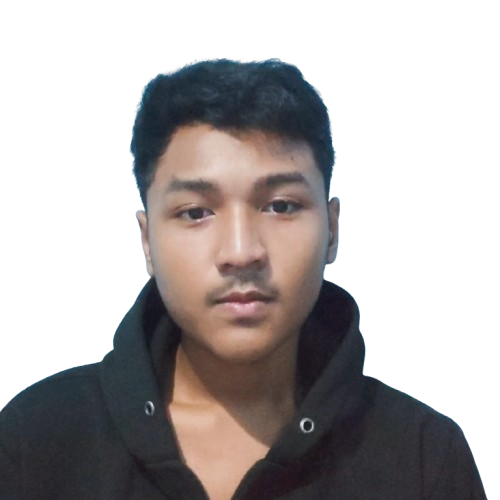

Tentang Saya
Saya adalah siswa SMK 22 Jakarta jurusan Teknik Komputer dan Jaringan (TKJ). Saya tertarik dengan dunia komputer, jaringan, serta teknologi informasi dan bersemangat untuk terus belajar dan berkembang dalam bidang ini.
Keahlian
- Manajemen Jaringan
- Instalasi & Konfigurasi Server
- Maintenance Komputer
- Dasar-dasar Pemrograman
- Keamanan Jaringan
- Troubleshooting Hardware & Software
Pendidikan
SMK 22 Jakarta
Jurusan Teknik Komputer dan Jaringan (TKJ)
Tahun Masuk: 2023 - Sekarang
Kontak
Email: ferdigoachdagamis@gmail.com
Telepon: 0813-8675-1010
Alamat: Jakarta, Indonesia